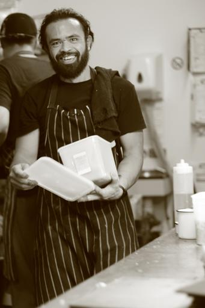

Target Audience
The target audience of this website is the general people interested in visiting our community, enjoying our parks and recreation areas, to appreciate the high quality of our restaurants and hotels. To find a new job in our industrial park, to make part of a great neighborhood, with a lot to offer. This website is a channel to connect people, businesses, and dreams.
Personas
Chef Jimmy Smith
- Job: International Chef
- Business: Arianda Cousine
- Demographics: Jimmy Smith is 44 years old, married with two children, and has his studies at Le Cordon Bleu. Born and raised in New York, creates after his graduation a singular interest in mix the france cousine techinics with a Utah products and history.
- Goals: He wants to grow with the community, development a relationship with other local businesses, and create a network to increase investments and Minersville expansion.
- Web interaction: The most part of internet uses is by mobile interfaces.
MS Lisa McLillite
- Job: Large tech bussines CEO
- Business: Stellae Tech
- Demographics: She is 53 years old and married with a single child. She has a bachelor science in computer science from BYU-Provo. Born and raised in Utah, she was responsible to develop computer systems and hardwares.
- Goals: Turn Utah into the new Silicon Valley, she understands the capabilities of Utah to develop the most advanced technology. Minersville is the house of Stellae Tech.
- Web interaction: She used all internet resources, and have an amazing network.
Scenarios
- How to join to Minersville Chamber of Commerce?
- What kind of business and services does Minersville have?
- How is life in Minersville?
- What to do in Minersville?
- What are the public services and the ratings of this in Minersville?